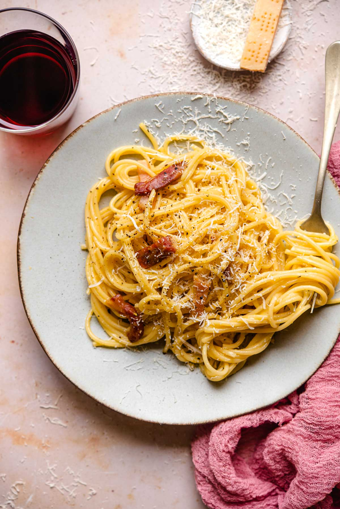

Recette des pâtes à la carbonara

Description de la recette :
Les pâtes à la carbonara sont une recette traditionnelle d'origine italienne. Des spaghettis sont souvent choisis pour accompagner ce plat.
La sauce consiste en de la guanciale, une charcuterie italienne, coupée en petit morceaux et grillés, avec une sauce à base de pecorino romano et de parmigianno.
Liste des ingrédients :
- Spaghettis
- Guanciale
- Oeufs
- Parmigianno regiano
- Pecorino romano
- Poivre
Etapes de préparation :
- Faire chauffer de l'eau salée dans un faitout, y verser les pâtes une fois l'eau bouillante
- Pendant que l'eau chauffe, couper la guanciale en petits dés, de la taille de lardons
- Une fois les pâtes en train de cuire, faire chauffer une pôele, sans ajout de matière grasse, y verser les dés de guanciale
- Faire griller les dés
- Dans un saladier, préparer le mélange de pecorino, parmigianno et oeuf
- Couper le feu sous la poêle, verser un peu d'eau de cuisson des pâtes
- Ajouter la préparation de fromage et d'oeufs et bien mélanger, ne surtout pas chauffer pour éviter au jaune d'oeuf de cuire
- Verser les spaghettis dans la poêle, bien mélanger
- Servir instantanément, tourner les spaghettis dans l'assiete et râper un petit peu de parmigianno pour le dressage